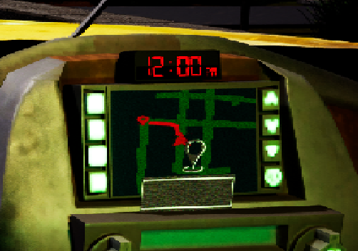
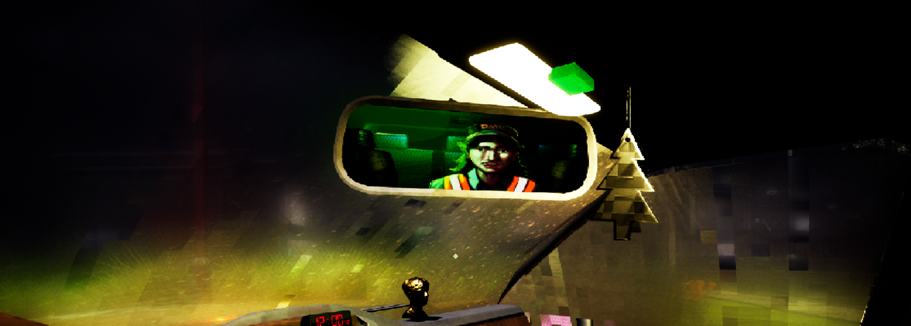
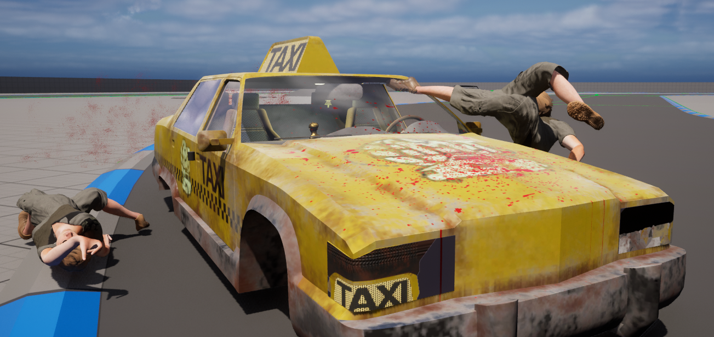
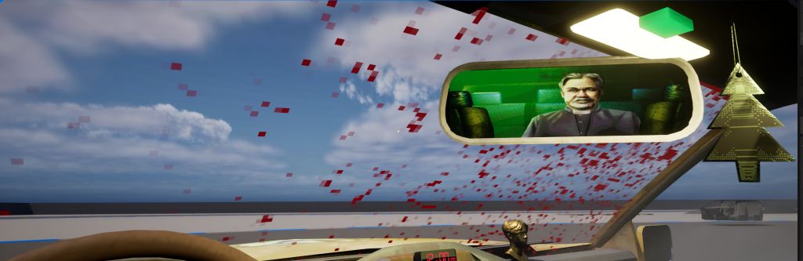

Midnight Taxi is a narrative focussed horror/thriller game about being a taxi driver in a suburban town in the Deep South. The game was created in UE5 and I worked on the junior tech team alongside 2 other juniors and 3 seniors. We worked in Blueprint and my main tasks were creating a working SatNav system, creating multiple materials, handling save data, creating the options menu and faking physics on an actor to be more performant. Check it out on Itch.io!
My greatest responsibility came in the form of the SatNav that guides the player. Setting this up involved the use of AI blueprints, multiple materials, widgets and a heapful of math. The SatNav essentially works by having an AI agent pathfind to the next destination location in an array. The movement of the AI is evaluated on a timer to determine whether or not the current position of the AI marks a noticeable turn. If it is decided this is the case then the point is added to an array of significant points. On the same timer, the position of the taxi is checked to see if it has passed the next significant point and if it should be removed. Every few seconds this process is reset and it is also reset when a destination point is reached.
To display the points on the SatNav I overloaded the OnPaint function. In this function, the world space points have to be converted to image space and then drawing the points to the screen and connecting them by using splines. One of the greatest difficulties I faced and where much of the math lies is with making it so the taxi is always facing north in the SatNav and the roads and points rotate around it. If the camera is unlocked, then no extra math needs to be done to correct the points. However, if the camera is locked (to allow the taxi to always face north) then the points must be corrected and rotataed in the opposite direction the car is moving.
The material is also stylised to highlight the roads and provide contrast to the important information coloured in red. Only meshes that have a road material applied to them are rendered to the scene capture which allows for clear visual direction. Pixelisation is also applied alongside a CRT-esque warping around the edges of the screen. There is also some static noise applied.

The window material I created can be shaped in many ways by actions in the game. For example, it fogs up and becomes hard to see when you mess with the taxi's air conditioning, rain droplets appear on the window when it's raining and they can be gotten rid of with the window wipers and if you were to hit a pedestrian then you might see blood splattered across your windscreen. All of these effects can trigger at the same time as well. The effects are managed by a scalar in a MPC which can be altered in another blueprint to adjust how applied the effect is.
The fog blur was done by making use of the spatial blur scene texture node and using a greyscale fogged window texture as a mask to determine how blurred an area would be. The blood effect was more difficult because I initially wanted to use decals like are used for the car bonnet but decals cannot be applied to transparent materials and I couldn't play around with the opacity channel because that is how the blur functions. To solve this, I just duplicated the mesh and added a new blood splatter material to it. The rain drops effect was created by Jonah Kirtley (a senior artist on the team) using animated textures and I implemented them into the existing window material and made them affect the fog.



The team that I was assigned was filled with talented and driven people and I felt like our communication was highly productive and professional. Having never worked in such a team before, I felt like I have learnt a lot with regards to getting work done collaboratively with others. We used Jira to manage our tasks which seniors members of a discipline team would set after discussing things as an entire group and then amongst the smaller discipline teams. Teams was used to talk to eachother outside of sessions in real life which allowed us to keep track of what other people were doing. We used Github to host the project and it was set up so each discipline had a branch to push to and then there was also a general weekly branch. One of the seniors managed merges as required outside of those times too.
Original Framework by Staffs Uni
Tom Meere - Tech Senior,
Kat Baranovska - Tech Senior,
Arsalan Syed - Tech Senior,
Edward Hill - Tech Junior,
Lucy Elliott-Darling - Tech Junior,
Billy Masih - Design Senior,
Bilal Patel - Design Senior,
Jaden Chhatralia - Design Junior,
Michael Fadare - Design Junior,
Harvey Lawrence - Design Junior,
Jonah Kirtley - Art Senior,
Liam Powell - Art Senior,
Kasjan Sznajdrowski - Art Senior,
George King - Art Senior,
Alex Petrov - Art Senior,
Bobby Evans - Art Senior
Sophie Baird - Art Junior,
Rafel Blama - Art Junior,
Jonathan Wareing - Art Junior,
Oliver Nielson - Animation Junior
This project was worked on from the beginning of March until mid May 2024.
As a team we were able to create a complete and compelling vertical slice of a game. Speaking of my work, I think that I created complex features that enhance the experience of the game. I also spent a lot of time optimising my features to ensure that they did not slow the game down significantly as they once did.
I don't believe a lot could have gone better, I think the team was well organised and that I completed plenty of high quality work. The only thing that would come to mind was in the days approaching the deadline there were last minute ideas that the team decided to try and add but this led to oversights in other areas and some crunch.
Rhys Elliott 2025. rhyselliottdev@protonmail.com